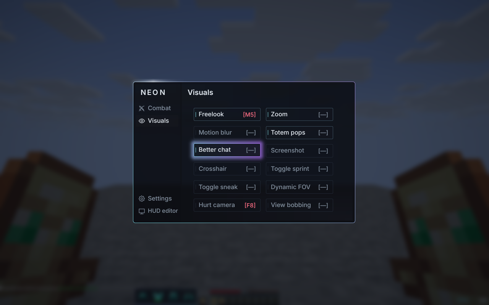
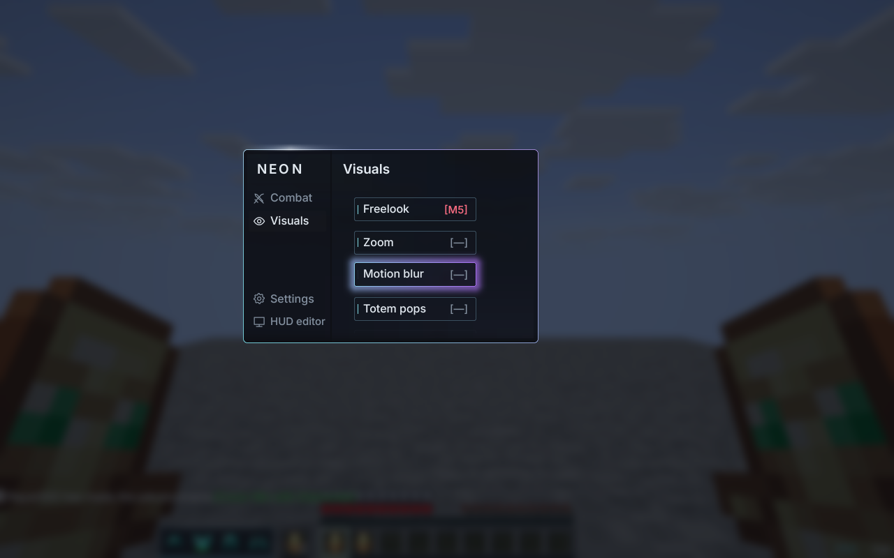
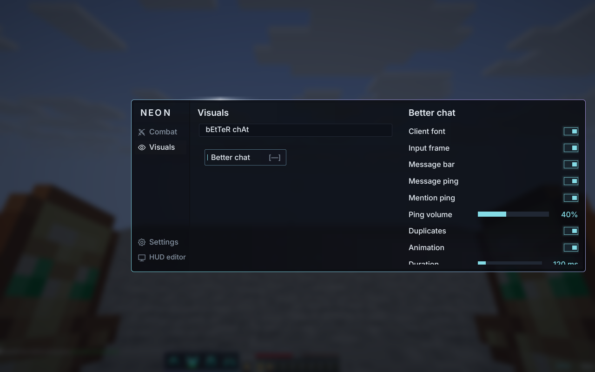
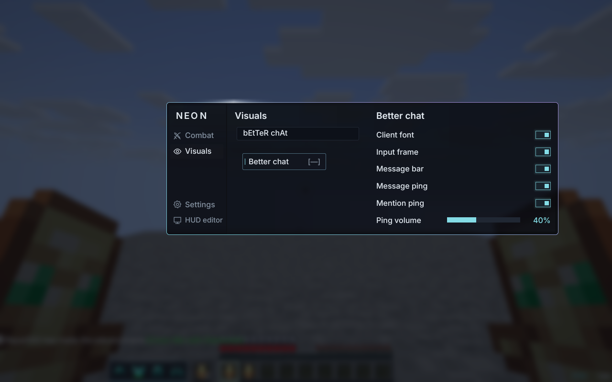
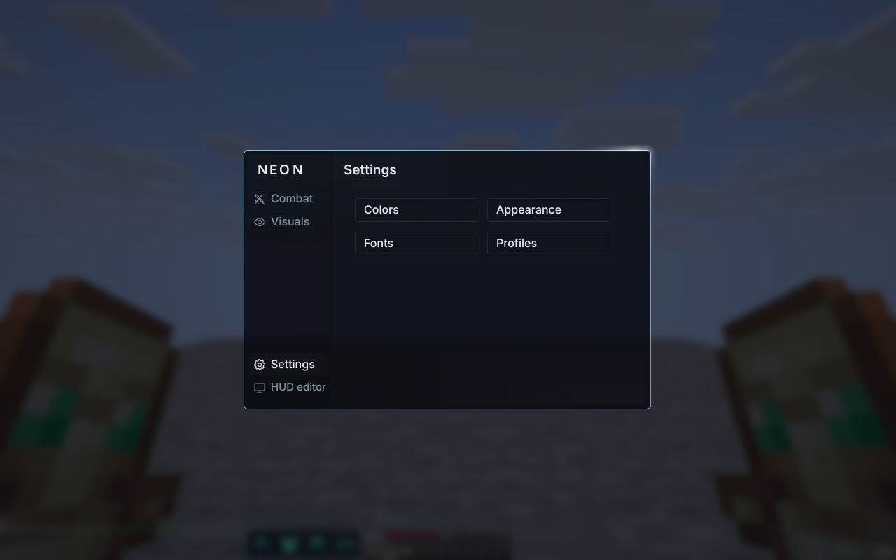
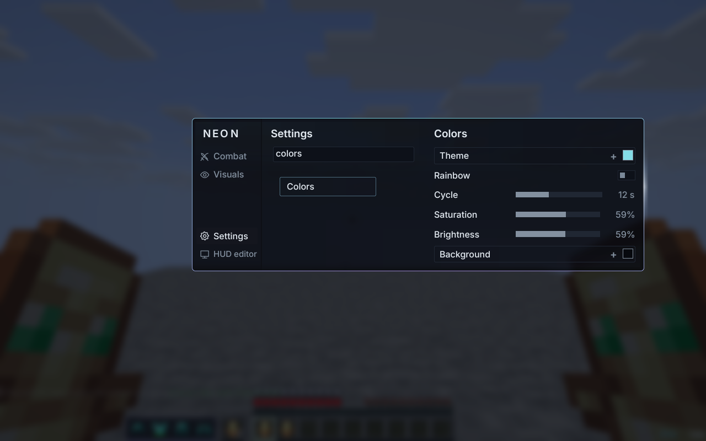
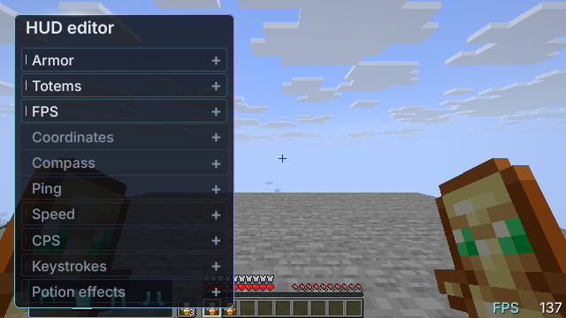
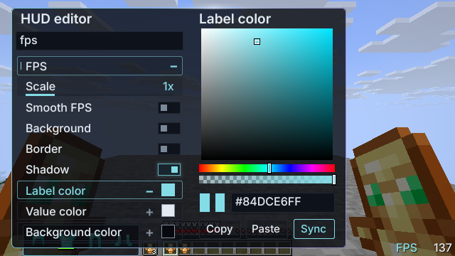

Neon — current client reference
Consolidated 17 November 2026 for 0.5.6. The design contract is authoritative. These are actual packaged-client captures, replacing the accumulated historical mockups. Images fit this page; open an original to inspect native pixels. The archive retains superseded directions.
Compact module grid
Default menu: approximately 582 × 370 physical pixels, independent of Minecraft GUI scale. Equal outlined buttons, aligned sidebar icons/text and search hidden until Ctrl+F. Left click toggles; right click configures. Bracketed binds stay at the right edge. No disclosure marks on grid buttons.




Settings and attached colors
Colors, Appearance, Fonts and Profiles use the same grid/drawer model. Shared shells use six-pixel corners and one animated cyan/violet outline; controls use three-pixel corners. Panels use 84% of saved background alpha/opacity. Button fills use 18% at rest and 28% on hover/selection, multiplied by saved Cards alpha/opacity.


Compact HUD column
All existing HUD widgets remain in the searchable expandable column. Only enabled widgets render or receive canvas input. A click reveals settings. A drag moves the widget. Where widgets overlap, the cursor and both mouse buttons target the selected widget first. Keep invisible resize corners, six-pixel edge catches and Alt bypass. No canvas labels, handles or selection outlines.


Interaction requirements
| Interaction | Required behavior |
|---|---|
| Press / release | 50 / 100 ms feedback, fixed hitboxes, no press sound. |
| Hover | Two-pixel painted lift, rounded cyan/violet Gaussian bloom, 220 ms reversible motion. |
| Drawer / fold | 340 / 150 ms settling targets; preserve position and velocity through reversals. |
| Content / close | 120 ms content crossfade; immediate gameplay release with an 80 ms render-only closing fade. |
| Outline | One thin contour, localized traveling bloom, physical edge position preserved during geometry changes. |
| Search | Hidden by default; Ctrl+F reveals and focuses, Enter/Down reveals first result without activating, Escape from the field or a result clears the query, then hides the empty field and reclaims its row. Clearing restores scrolling; no configuration or Undo changes. |
| Colors | 168 logical-unit attached drawer, live HSV/opacity and Unity Copy/Paste/Sync. An outside click dismisses the drawer and keeps live edits. Another visible color row switches directly. |
| Acknowledgement | Copied/Saved only after success, 900 ms hold and 120 ms return fade, stable geometry. |
Static captures establish appearance, not timing or correctness. See the verification report for packaged tests, measured allocation/frame-time results, native input coverage, endurance results and explicit hardware limits.